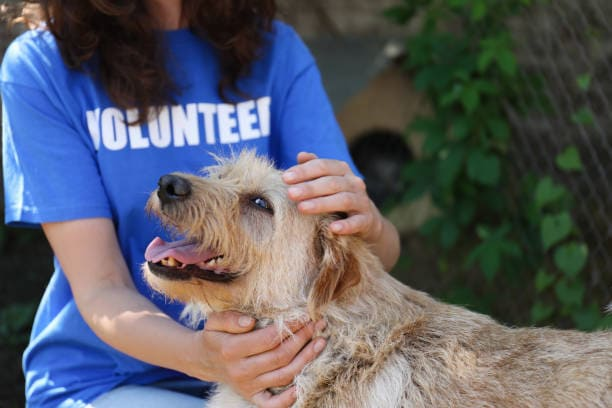

Programa de Rescate
Cada año, rescatamos y rehabilitamos a cientos de animales en situación de abandono y maltrato, brindándoles una segunda oportunidad.
Más información
Programa de Adopción
Facilitamos el proceso de adopción responsable para garantizar que cada animal encuentre un hogar amoroso y seguro.
Más información

Programa de Voluntariado
Invitamos a la comunidad a unirse como voluntarios para ayudar en el cuidado y bienestar de los animales rescatados.
Más información